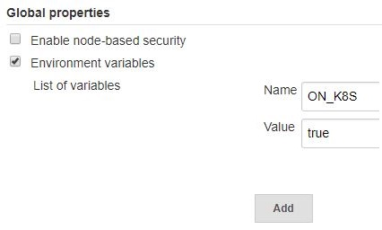

SAP Cloud SDK Pipeline Configuration¶
General configuration¶
| Property | Mandatory | Default Value | Description |
|---|---|---|---|
productiveBranch |
master |
The name of your default branch. This branch will be used for deploying your application. Other branches will skip deployment. | |
projectName |
artifactId from pom |
Name of the project | |
collectTelemetryData |
true |
No personal data is collected. For details, consult the analytics documentation. | |
unsafeMode |
false |
Enable unsafe mode to skip checking environment variables for insecure elements. Only use this for demo purposes, never for productive usage. | |
customDefaultsCredentialsId |
Credentials (username / password) used to download custom defaults. |
features¶
This section allows to enable or disable certain optional features. This concept is known as Feature Toggles.
| Property | Mandatory | Default Value | Description |
|---|---|---|---|
parallelTestExecution |
off |
Run E2E Tests in parallel. This feature is disabled by default because it is not supported in Blue Ocean. If this feature is enabled, we suggest not using the Blue Ocean interface and rely on the classic UI instead. |
Example:
general: productiveBranch: 'master' projectName: 'example_project' features: parallelTestExecution: on
jenkinsKubernetes¶
If the Jenkins is running on a kubernetes cluster as a pod, we can use the dynamic scaling feature in the pipeline. In order to enable this, an environment variable ON_K8S has to be set to true on the jenkins.
| Property | Mandatory | Default Value | Description |
|---|---|---|---|
jnlpAgent |
jenkins/jnlp-slave:latest |
Docker image for jnlp agent to be used |
In the Jenkins configuration section under Manage Jenkins menu, set the value for your environment variable under Global properties section.

The Jenkins spins up jnlp agent nodes on demand. By default, the jenkins/jnlp-slave docker image is used. We can also use the custom jnlp agent by configuring the same in the .pipeline/config.yml file as shown below.
general: jenkinsKubernetes: jnlpAgent: jenkins/jnlp-slave:latest
Stage configuration¶
staticCodeChecks¶
The staticCodeChecks stage has been integrated into the build stage.
To configure static code checks, please configure the step mavenExecuteStaticCodeChecks as described here.
backendIntegrationTests¶
| Property | Mandatory | Default Value | Description |
|---|---|---|---|
retry |
1 |
The number of times that integration tests will retry before aborting the build. Note: This will consume more time for the jenkins build. | |
forkCount |
1C |
The number of JVM processes that are spawned to run the tests in parallel in case of using a maven based project structure. For more details visit the surefire documentation. | |
credentials |
The list of system credentials to be injected during integration tests. The following example will provide the username and password for the systems with the aliases ERP and SFSF. For this, it will use the Jenkins credentials entries erp-credentials and successfactors-credentials. You have to ensure that corresponding credential entries exist in your Jenkins configuration |
Example:
backendIntegrationTests: retry: 2 credentials: - alias: 'ERP' credentialId: 'erp-credentials' - alias: 'SF' credentialId: 'successfactors-credentials'
The integration tests stage also offers the option to run a sidecar container, e.g. for running a database or another downstream system. To use this optional feature the following configuration values have to be provided:
| Property | Mandatory | Default Value | Description |
|---|---|---|---|
sidecarImage |
Name of the Docker image that should be used. | ||
sidecarName |
On Docker: Name of the container in local network. On Kubernetes: Name of the container. | ||
sidecarReadyCommand |
Command executed inside the container which returns exit code 0 when the container is ready to be used. | ||
sidecarEnvVars |
Environment variables to set in the container. |
Note: To access the container from your tests use the sidecarName as hostname on Docker or localhost:portOfProcess on Kubernetes.
Example:
backendIntegrationTests: retry: 2 credentials: - alias: 'ERP' credentialId: 'erp-credentials' - alias: 'SF' credentialId: 'successfactors-credentials' sidecarName: 'postgres' sidecarImage: 'postgres' sidecarReadyCommand: 'pg_isready' sidecarEnvVars: PORT: 8234
frontendIntegrationTests¶
| Property | Mandatory | Default Value | Description |
|---|---|---|---|
dockerImage |
The docker image to be used for running frontend integration tests. Note: This will only change the docker image used for unit testing in the frontend. For switching all npm based steps to a different npm or chromium version, you should configure the dockerImage via the executeNpm step. |
frontendUnitTests¶
| Property | Mandatory | Default Value | Description |
|---|---|---|---|
dockerImage |
The docker image to be used for running frontend unit tests. Note: This will only change the docker image used for unit testing in the frontend. For switching all npm based steps to a different npm or chromium version, you should configure the dockerImage via the executeNpm step. |
endToEndTests¶
For the stage endToEndTests the same configuration options are available as for the stage productionDeployment.
In addition to these options also the following ones are available for end-to-end tests:
It is possible to activate zero downtime deployment in end-to-end tests with the option enableZeroDowntimeDeployment.
This will lead to a blue-green-deployment on SCP Cloud Foundry respectively to a rolling update on SCP Neo.
By default this feature is turned off.
Running end-to-end tests can be restricted to the productiveBranch with the option onlyRunInProductiveBranch.
This might be useful when the end-to-end tests slow down development, and build failure on the productiveBranch is acceptable.
By default this feature is turned off.
Additional parameters can be passed for each end-to-end test deployment by specifying optional parameters for an application URL.
These parameters are appended to the npm command during execution.
This could be used for example to split the entire end-to-end test scenario into multiple sub-scenarios and running these sub-scenarios on different deployments.
For example, when using nightwatch-api, these scenarios can be defined via annotations in the test descriptions and can be called with the --tag parameter as shown in the example below. Another option is to execute the end to end tests with various web browsers, e.g. chrome or firefox.
Example:
endToEndTests: enableZeroDowntimeDeployment: true onlyRunInProductiveBranch: true appUrls: - url: <application url> credentialId: e2e-test-user-cf parameters: '--tag scenario1 --NIGHTWATCH_ENV=chrome' - url: <application url 2> credentialId: e2e-test-user-cf parameters: '--tag scenario2 --tag scenario3 --NIGHTWATCH_ENV=firefox'
npmAudit¶
This stage uses the npm audit command to check for known vulnerabilities in dependencies.
The pipeline fails if one of the following thresholds is exceeded:
- Zero vulnerabilities of category critical
- Zero vulnerabilities of category high
- Two vulnerabilities of category moderate
In case you audited an advisory, and it turns out to be a false positive, you can mark it as audited by adding its id to the auditedAdvisories in the stage configuration.
A false positive in this case is when you are confident that your application is not affected in any way by the underlying bug or vulnerability.
Example:
npmAudit: auditedAdvisories: - 123 - 124 - 77
Note: Do not prefix the id with leading zeros, as this would make the number interpreted as octal.
The pipeline will warn you, if an "audited advisory" is not actually detected in your project.
performanceTests¶
| Property | Mandatory | Default Value | Description |
|---|---|---|---|
cfTargets |
The list of Cloud Foundry deployment targets required for the performance test stage. | ||
neoTargets |
The list of Neo deployment targets required for the performance test stage. |
For details on the properties cfTargets and neoTargets see the stage productionDeployment.
s4SdkQualityChecks¶
| Property | Mandatory | Default Value | Description |
|---|---|---|---|
disabledChecks |
[] | A list of checks which should not be executed. Possible values are: checkDeploymentDescriptors (Check for insecure options, such as ALLOW_MOCKED_AUTH_HEADER in deployment descriptors), checkResilience(Check that application is resilient to faults in the network), checkServices (Check that only official APIs are used), checkFrontendCodeCoverage (Ensures high frontend code coverage), checkBackendCodeCoverage (Ensures high backend code coverage) |
|
jacocoExcludes |
A list of exclusions expressed as an Ant-style pattern relative to the application folder. An example can be found below. | ||
threshold |
This setting allows the code coverage to be stricter compared to the default values. By default, the pipeline will fail if the coverage is below 65% line coverage (unstableCoverage), and will be unstable if it is less than 70% (successCoverage). If lower numbers are configured, or this configuration is left out, the default values are applied. |
||
customODataServices |
We recommend only using OData services listed in the in SAP API Business Hub. Despite that for using custom business objects you can add those APIs here. | ||
nonErpDestinations |
List of destination names that do not refer to ERP systems. Use this parameter to exclude specific destinations from being checked in context of ERP API whitelists. | ||
nonErpUrls |
List of URLs that are not defined as destinations. Use this parameter to exclude specific URLs from being checked in context of ERP API whitelists. | ||
codeCoverageFrontend |
A map containing the thresholds unstable and failing. If the code coverage is lower than what is configured in unstable, the pipeline result is unstable. If it is lower than what is configured in failing, the pipeline will fail. |
Example:
s4SdkQualityChecks: disabledChecks: [] jacocoExcludes: - '**/HelloWorld.class' - '**/generated/**' threshold: successCoverage: 85 unstableCoverage: 70 customODataServices: - 'API_myCustomODataService' codeCoverageFrontend: unstable: 50 failing: 45
checkmarxScan¶
Checkmarx is one of the security analysis tools which is supported by the pipeline.
| Property | Mandatory | Default Value | Description |
|---|---|---|---|
groupId |
X | Checkmarx Group ID | |
checkMarxProjectName |
projectName defined in general | Name of the project on Checkmarx server. | |
filterPattern |
'!**/*.log, !**/*.lock, !**/*.json, !**/*.html, !**/Cx*, !**/test/**, !s4hana_pipeline/**, !**/unit-tests/**, !**/integration-tests/**, !**/frontend-unit-tests/**, !**/e2e-tests/**, !**/performance-tests/**, **/*.js, **/*.java, **/*.ts |
Files which needs to be skipped during scanning. | |
fullScansScheduled |
false |
Toggle to enable or disable full scan on a certain schedule. | |
incremental |
true |
Perform incremental scan with every run. If turned false, complete project is scanned on every submission. |
|
vulnerabilityThresholdMedium |
0 |
The threshold for medium level threats. If the findings are greater than this value, pipeline execution will result in failure. | |
vulnerabilityThresholdLow |
99999 |
The threshold for low level threats. If the findings are greater than this value, pipeline execution will result in failure. | |
preset |
36 |
Name or numerical ID of Checkmarx preset to be used when scanning this project. When a name (string) is specified, the pipeline will try to discover the corresponding numerical ID via the Checkmarx API. Please also make sure to specify checkmarxCredentialsId and checkmarxServerUrl in such a case. For determining available presets in your Checkmarx webclient, go to Checkmarx -> Management -> Scan Settings -> Preset Manager. Alternatively, you can determine the numerical ID of your targeted preset by following those guides: Token-based Authentication and Get All Preset Details | |
checkmarxCredentialsId |
The Credential ID to connect to Checkmarx server. The credentials must be type username with password. This property becomes mandatory if the credentials are not configured in the Jenkins plugin itself. | ||
checkmarxServerUrl |
An URL to Checkmarx server. This property becomes mandatory if the URL to the Checkmarx server is not configured in the Jenkins plugin itself or if the checkmarxCredentialsId is configured. |
Example:
checkmarxScan: groupId: <Checkmarx GroupID> vulnerabilityThresholdMedium: 5 checkMarxProjectName: 'My_Application' vulnerabilityThresholdLow: 999999 filterPattern: '!**/*.log, !**/*.lock, !**/*.json, !**/*.html, !**/Cx*, **/*.js, **/*.java, **/*.ts' fullScansScheduled: false generatePdfReport: true incremental: true preset: '36' checkmarxCredentialsId: CHECKMARX-SCAN checkmarxServerUrl: http://localhost:8089
productionDeployment¶
| Property | Mandatory | Default Value | Description |
|---|---|---|---|
cfCreateServices |
The list of services which should be created before deploying the application as defined below. | ||
cfTargets |
The list of productive Cloud Foundry deployment targets to be deployed when a build of your productive branch succeeds. | ||
neoTargets |
The list of productive Neo deployment targets to be deployed when a build of your productive branch succeeds. | ||
appUrls |
The URLs under which the app is available after deployment. Each appUrl can be a string with the URL or a map containing a property url and a property credentialId. An example is shown in the configuration for the stage endToEndTests. |
cfCreateServices¶
The option cfCreateServices is especially useful if you don't use MTA and need a way to declaratively define which services should be created in Cloud Foundry.
The following properties can be defined for each element in the list.
For a detailed documentation of the indivitual properties please consult the step documentation.
| Property | Mandatory | Default Value | Description |
|---|---|---|---|
org |
X** | The organization where you want to deploy your app. | |
space |
X** | The space where you want to deploy your app. | |
serviceManifest |
X** | Manifest file that needs to be used defining the services. | |
manifestVariablesFiles |
X** | Variables that should be replaced in the service manifest file. | |
credentialsId |
X** | ID to the credentials that will be used to connect to the Cloud Foundry account. | |
apiEndpoint |
X** | URL to the Cloud Foundry endpoint. |
** The parameters can either be specified here or for the step cloudFoundryDeploy or globally in the general section under the key cloudFoundry.
cfTargets and neoTargets¶
You can either specify the property cfTargets or neoTargets.
For cfTargets the following properties can be defined:
| Property | Mandatory | Default Value | Description |
|---|---|---|---|
org |
X** | The organization where you want to deploy your app. | |
space |
X** | The space where you want to deploy your app. | |
appName |
X** (not for MTA) | Name of the application. | |
manifest |
X** (not for MTA) | Manifest file that needs to be used. | |
credentialsId |
X** | ID to the credentials that will be used to connect to the Cloud Foundry account. | |
apiEndpoint |
X** | URL to the Cloud Foundry endpoint. | |
mtaExtensionDescriptor |
(Only for MTA-projects) Path to the mta extension description file. For more information on how to use those extension files please visit the SAP HANA Developer Guide. | ||
mtaExtensionCredentials |
(Only for MTA-projects) Map of credentials that need to be replaced in the mtaExtensionDescriptor. This map needs to be created as value-to-be-replaced:id-of-a-credential-in-jenkins |
** The parameters can either be specified here or for the step cloudFoundryDeploy or globally in the general section under the key cloudFoundry.
Examples¶
general: cloudFoundry: org: 'myorg' space: 'Prod' apiEndpoint: 'https://api.cf.sap.hana.ondemand.com' credentialsId: 'CF-DEPLOY-DEFAULT' manifestVariablesFiles: ['manifest-variables.yml'] stages: productionDeployment: appUrls: - url: <application url> credentialId: e2e-test-user-cf cfCreateServices: - serviceManifest: 'services-manifest.yml' - serviceManifest: 'services-manifest.yml' space: 'Prod2' org: 'myorg2' cfTargets: - appName: 'exampleapp' manifest: 'manifest.yml' - space: 'Prod2' org: 'myorg2' appName: 'exampleapp' manifest: 'manifest.yml' credentialsId: 'CF-DEPLOY-PROD1'
The MTA projects can make use of the extension files and one can use a Jenkins credential store to inject the credentials during runtime instead of storing them as a plain text in the extension file.
In order to use this feature, use a JSP style or GString style place holder in the extension file and provide the respective credential id in the .pipeline/config.yml as shown below.
Please note currently only the Jenkins Sercret text is the supported format for runtime credential substitution.
#.pipeline/config.yml productionDeployment: appUrls: - url: <application url> credentialId: e2e-test-user-cf cfTargets: - space: 'Prod' org: 'myorg' appName: 'exampleapp' manifest: 'manifest.yml' credentialsId: 'CF-DEPLOY' apiEndpoint: '<Cloud Foundry API endpoint>' mtaExtensionDescriptor: 'path to mta extension description file' mtaExtensionCredentials: brokerCredential: sercretText-id-in-jenkins
#extension_file.mtaext _schema-version: "3.1" version: 0.0.1 extends: myApplication ID: my-application parameters: broker-credentials: <%= brokerCredential %>
For neoTargets the following properties can be defined:
| Property | Mandatory | Default Value | Description |
|---|---|---|---|
host |
X | Host of the region you want to deploy to, see Regions | |
account |
X | Identifier of the subaccount | |
application |
X | Name of the application in your account | |
credentialsId |
CI_CREDENTIALS_ID |
ID of the credentials stored in Jenkins and used to deploy to SAP Cloud Platform | |
environment |
Map of environment variables in the form of KEY: VALUE | ||
vmArguments |
String of VM arguments passed to the JVM | ||
size |
lite |
Size of the JVM, e.g. lite, pro', prem, prem-plus |
|
runtime |
X | Name of the runtime: neo-java-web, neо-javaee6-wp, neо-javaee7-wp. See the runtime for more information. | |
runtimeVersion |
X | Version of the runtime. See runtime-version for more information. |
Example:
productionDeployment: neoTargets: - host: 'eu1.hana.ondemand.com' account: 'myAccount' application: 'exampleapp' credentialsId: 'NEO-DEPLOY-PROD' environment: STAGE: Production vmArguments: '-Dargument1=value1 -Dargument2=value2' runtime: 'neo-javaee6-wp' runtimeVersion: '2'
artifactDeployment¶
nexus¶
The deployment of artifacts to nexus can be configured with a map containing the following properties:
| Property | Mandatory | Default Value | Description |
|---|---|---|---|
version |
nexus3 |
Version of nexus. Can be nexus2 or nexus3. |
|
url |
X | URL of the nexus. The scheme part of the URL will not be considered, because only http is supported. |
|
mavenRepository |
Name of the nexus repository for Maven and MTA artifacts. Ignored if the project does not contain pom.xml or mta.yml in the project root. |
||
npmRepository |
Name of the nexus repository for NPM artifacts. Ignored if the project does not contain a package.json in the project root directory. |
||
groupId |
Common group ID for MTA build artifacts, ignored for Maven projects. | ||
credentialsId |
ID to the credentials which is used to connect to Nexus. Anonymous deployments do not require a credentialsId. |
Choosing what to deploy into the npm repository¶
The Pipeline performs an npm publish command to deploy npm modules. This deployment might include files that you don't want to deploy. See here for npm documentation.
WARNING: The .gitignore file is not available in the pipeline during the artifact deployment.
To exclude files from that, please create a .npmignore file, copy the contents of your .gitignore file and add specific ignores for example for *.java files.
Example:
artifactDeployment: nexus: version: nexus2 url: nexus.mycorp:8080/nexus mavenRepository: snapshots npmRepository: npm-repo credentialsId: 'NEXUS-DEPLOY'
whitesourceScan¶
Configure credentials for WhiteSource scans.
The minimum required Maven WhiteSource plugin version is 18.6.2, ensure this in the plugins section of the project pom.xml file.
Pipeline will execute npx whitesource run for npm projects.
Please ensure that all package.json files have a name and version configured so that it is possible to distinguish between the different packages.
<plugin> <groupId>org.whitesource</groupId> <artifactId>whitesource-maven-plugin</artifactId> <version>18.6.2</version> </plugin>
| Property | Mandatory | Default Value | Description |
|---|---|---|---|
product |
X | Name of your product in WhiteSource. | |
staticVersion |
Overwrites the respective version in the whitesource UI per scan with the staticVersion. Per default for every new version of a pom/package.json a new project will be created in the whitesource UI. To deactivate the creation of new projects and always have a fixed version for each project in the whitesource UI, configure the staticVersion. | ||
credentialsId |
X | Unique identifier of the Secret Text on Jenkins server that stores your organization(API Token) of WhiteSource. |
|
whitesourceUserTokenCredentialsId |
Unique identifier of the Secret Text on Jenkins server that stores WhiteSource userKey of a user. This is required only if the administrator of the WhiteSource service has enabled additional access level control. More details can be found here. |
Please note that you can not have a whitesource.config.json in your project, since the Pipeline generates one from this configuration.
fortifyScan¶
The Fortify scan is configured using the step fortifyExecuteScan.
The stage is executed in the productive branch when the parameter fortifyCredentialsId in the step config of fortifyExecuteScan is defined.
lint¶
The lint stage has been integrated into the build stage.
The options for the use of linting tools remain the same and are described in the build tools section.
Note, the available configuration options can be found in the related step documentation.
sonarQubeScan¶
Configure SonarQube scans.
This is an optional feature for teams who prefer to use SonarQube. Note that it does some scans that are already done by the pipeline by default.
| Property | Mandatory | Default Value | Description |
|---|---|---|---|
runInAllBranches |
false | Define whether the scan should also happen in non productive branches, i.e. if your SonarQube instance supports that. | |
projectKey |
X | The project is used to refer your project. | |
instance |
X | This property refers to a sonarqube instance, which needs to be defined in the Jenkins. | |
dockerImage |
ppiper/node-browsers:v3 | This property refers to a docker image which will be used for triggering the sonar scan. In case your sonar instance uses a self signed certificate, a docker image with that certificate installed can be used. | |
sonarProperties |
The properties are used to configure sonar. Please refer to the example below. |
Note: The stage is skipped by default if you're not on a productive branch (master by default).
You can change this by setting runInAllBranches to true, which requires the commercial version of SonarQube.
Example:
sonarQubeScan: projectKey: "my-project" instance: "MySonar" dockerImage: 'myDockerImage' sonarProperties: - 'sonar.jacoco.reportPaths=s4hana_pipeline/reports/coverage-reports/unit-tests.exec,s4hana_pipeline/reports/coverage-reports/integration-tests.exec' - 'sonar.sources=./application'
postPipelineHook¶
This stage does nothing. Its purpose is to be overridden if required.
See the documentation for pipeline extensibility for details on how to extend a stage.
The name of an extension file must be postPipelineHook.groovy.
Also, the stage (and thus an extension) is only executed if a stage configuration exists, like in this example:
postPipelineHook: enabled: true
Step configuration¶
This section describes the steps that are avialable only in SAP Cloud SDK Pipeline. For common project "Piper" steps, please see the Library steps section of the documentation.
checkGatling¶
Gatling is used as one of the performance tests tool.
| Property | Mandatory | Default Value | Description |
|---|---|---|---|
enabled |
false |
You can enable Gatling tests by turning the flag to true. |
Example:
checkGatling: enabled: true
checkJMeter¶
Apache JMeter is executed as part of performance tests of the application. The user is free to choose between JMeter and Gatling or both.
| Property | Mandatory | Default Value | Description |
|---|---|---|---|
options |
Options such as proxy. | ||
testPlan |
./performance-tests/* |
The directory where the test plans reside. Should reside in a subdirectory under performance-tests directory if both JMeter and Gatling are enabled. |
|
dockerImage |
famiko/jmeter-base |
JMeter docker image. | |
failThreshold |
100 |
Marks build as FAILURE if the value exceeds the threshold. |
|
unstableThreshold |
90 |
Marks build as UNSTABLE if the value exceeds the threshold. |
Example:
checkJMeter: options: '-H my.proxy.server -P 8000' testPlan: './performance-tests/JMeter/*' # mandatory parameter if both JMeter and gatling are enabled dockerImage: 'famiko/jmeter-base' failThreshold : 80 unstableThreshold: 70
executeNpm¶
The executeNpm step is used for all invocations of the npm build tool. It is, for example, used for building the frontend and for executing end to end tests.
| Property | Mandatory | Default Value | Description |
|---|---|---|---|
dockerImage |
ppiper/node-browsers:v2 |
The image to be used for executing npm commands. | |
defaultNpmRegistry |
The default npm registry url to be used as the remote mirror. Bypasses the local download cache if specified. |
debugReportArchive¶
The debugReportArchive step can be used to create confidential (instead of redacted) debug reports.
The difference between the redacted and the confidential debug report is, that potentially confidential information, such as the GitHub repository and branch, global extension repository and shared libraries, are included in the confidential debug report. It is the user's responsibility to make sure that the debug report does not contain any confidential information.
| Property | Mandatory | Default Value | Description |
|---|---|---|---|
shareConfidentialInformation |
false |
If set to true, a confidential debug report is being generated with each build. |
Example:
debugReportArchive: shareConfidentialInformation: true
Post action configuration¶
sendNotification¶
The sendNotification post-build action can be used to send notifications to project members in case of an unsuccessful build outcome or if the build goes back to normal.
By default, an email is sent to the list of users who committed a change since the last non-broken build. Additionally, a set of recipients can be defined that should always receive notifications.
| Property | Mandatory | Default Value | Description |
|---|---|---|---|
enabled |
false |
If set to true, notifications will be sent. |
|
skipFeatureBranches |
false |
If set to true, notifications will only be sent for the productive branch as defined in the general configuration section. |
|
recipients |
List of email addresses that should be notified in addition to the standard recipients. |
Example:
postActions: sendNotification: enabled: true skipFeatureBranches: false recipients: - ryan.architect@foobar.com - john.doe@foobar.com